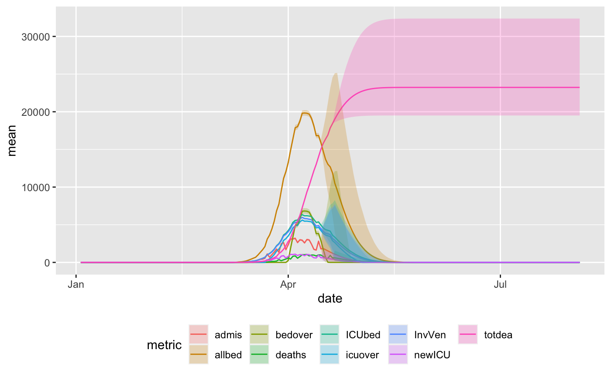
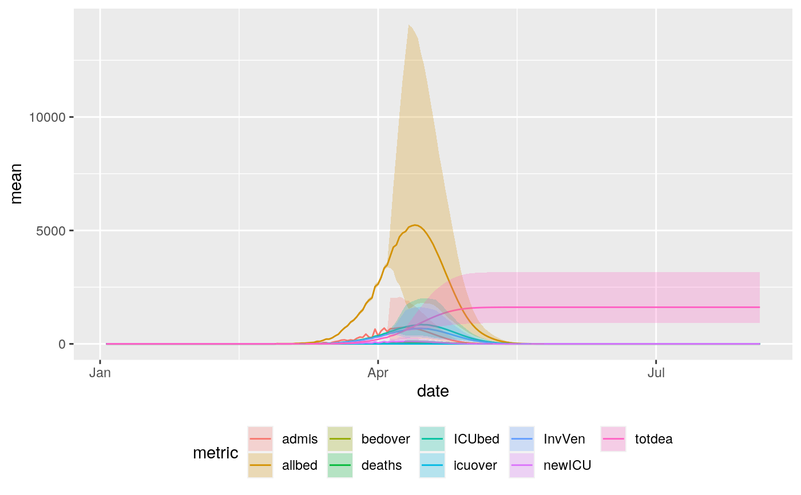
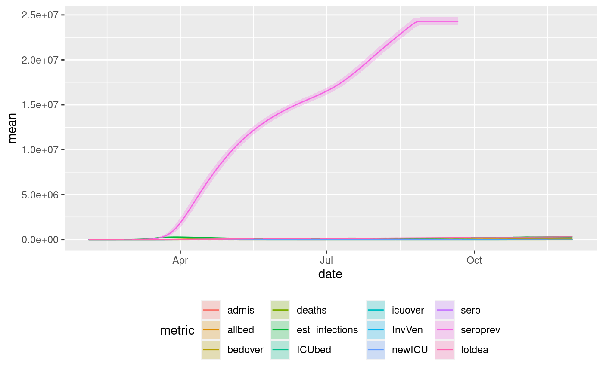
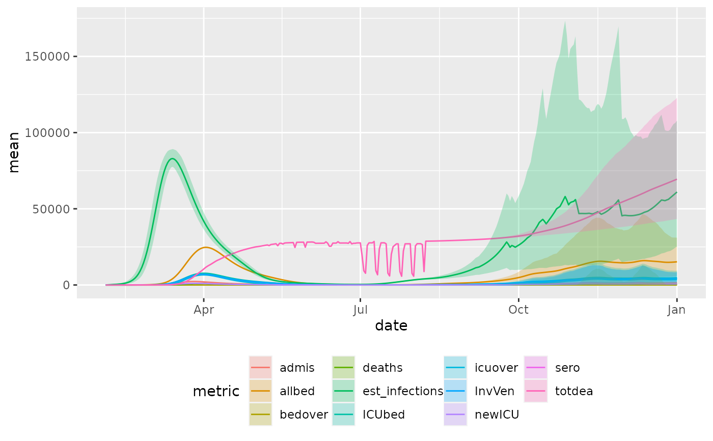
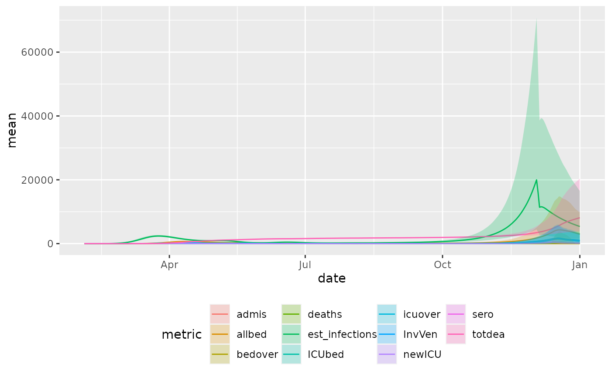

Using data from https://covid19.healthdata.org/projections, either render a plot or return a ggplot object for further manipulation.
plot_projection( location_name, projections = healthdata_projections_data(), metrics = unique(projections$metric) )
Arguments
| location_name | character(1), chosen from |
|---|---|
| projections | supply a data.frame, typically from a call to
|
| metrics | character vector of metrics to include on plot.
Get a list of these from the |
Source
https://covid19.healthdata.org/projections
Details
This function is a convenience function to return a ggplot2 object that
displays projections for a given location. Projections are typically
coming from a call to healthdata_projections_data(). If assigned to a
variable, the results can be further manipulated or passed into any
function that accepts a ggplot2 object (like plotly, cowplot, etc.). See
examples for details.
See also
healthdata_projections_data()
Other plotting:
align_to_baseline(),
plot_epicurve()
Examples
library(sars2pack) hdp = healthdata_projections_data() library(ggplot2) # possible locations sort(unique(hdp$location_name))#> [1] "Abruzzo" "Acre" #> [3] "Afghanistan" "Aguascalientes" #> [5] "Alabama" "Alagoas" #> [7] "Alaska" "Albania" #> [9] "Alberta" "Algeria" #> [11] "Amapá" "Amazonas" #> [13] "Andalucia" "Andhra Pradesh" #> [15] "Andorra" "Angola" #> [17] "Aragon" "Argentina" #> [19] "Arizona" "Arkansas" #> [21] "Armenia" "Arunachal Pradesh" #> [23] "Assam" "Asturias" #> [25] "Australia" "Austria" #> [27] "Azad Jammu & Kashmir" "Azerbaijan" #> [29] "Baden-Württemberg" "Bahamas" #> [31] "Bahia" "Bahrain" #> [33] "Baja California" "Baja California Sur" #> [35] "Balearic Islands" "Balochistan" #> [37] "Bangladesh" "Barbados" #> [39] "Basilicata" "Basque Country" #> [41] "Bavaria" "Belarus" #> [43] "Belgium" "Benin" #> [45] "Berlin" "Bihar" #> [47] "Bolivia (Plurinational State of)" "Bosnia and Herzegovina" #> [49] "Brandenburg" "Brazil" #> [51] "Bremen" "British Columbia" #> [53] "Bulgaria" "Burkina Faso" #> [55] "Cabo Verde" "Calabria" #> [57] "California" "Cameroon" #> [59] "Campania" "Campeche" #> [61] "Canada" "Canary Islands" #> [63] "Cantabria" "Castile and León" #> [65] "Castilla-La Mancha" "Catalonia" #> [67] "Ceará" "Central African Republic" #> [69] "Chad" "Chhattisgarh" #> [71] "Chiapas" "Chihuahua" #> [73] "Chile" "Coahuila" #> [75] "Colima" "Colombia" #> [77] "Colorado" "Community of Madrid" #> [79] "Comoros" "Congo" #> [81] "Connecticut" "Costa Rica" #> [83] "Côte d'Ivoire" "Croatia" #> [85] "Cuba" "Cyprus" #> [87] "Czechia" "Delaware" #> [89] "Delhi" "Democratic Republic of the Congo" #> [91] "Denmark" "District of Columbia" #> [93] "Distrito Federal" "Djibouti" #> [95] "Dominican Republic" "Durango" #> [97] "Ecuador" "Egypt" #> [99] "El Salvador" "Emilia-Romagna" #> [101] "Equatorial Guinea" "Espírito Santo" #> [103] "Estonia" "Eswatini" #> [105] "Ethiopia" "Extremadura" #> [107] "Finland" "Florida" #> [109] "France" "Friuli-Venezia Giulia" #> [111] "Gabon" "Galicia" #> [113] "Gambia" "Georgia" #> [115] "Germany" "Ghana" #> [117] "Gilgit-Baltistan" "Goa" #> [119] "Goiás" "Greece" #> [121] "Guam" "Guanajuato" #> [123] "Guatemala" "Guerrero" #> [125] "Guinea" "Guinea-Bissau" #> [127] "Gujarat" "Guyana" #> [129] "Haiti" "Hamburg" #> [131] "Haryana" "Hawaii" #> [133] "Hesse" "Hidalgo" #> [135] "Himachal Pradesh" "Honduras" #> [137] "Hungary" "Iceland" #> [139] "Idaho" "Illinois" #> [141] "India" "Indiana" #> [143] "Indonesia" "Iowa" #> [145] "Iran (Islamic Republic of)" "Iraq" #> [147] "Ireland" "Islamabad Capital Territory" #> [149] "Israel" "Italy" #> [151] "Jalisco" "Jamaica" #> [153] "Jammu & Kashmir and Ladakh" "Japan" #> [155] "Jharkhand" "Jordan" #> [157] "Kansas" "Karnataka" #> [159] "Kazakhstan" "Kentucky" #> [161] "Kenya" "Kerala" #> [163] "Khyber Pakhtunkhwa" "Kuwait" #> [165] "Kyrgyzstan" "La Rioja" #> [167] "Latvia" "Lazio" #> [169] "Lebanon" "Liberia" #> [171] "Libya" "Liguria" #> [173] "Lithuania" "Lombardia" #> [175] "Louisiana" "Lower Saxony" #> [177] "Luxembourg" "Madagascar" #> [179] "Madhya Pradesh" "Maharashtra" #> [181] "Maine" "Malawi" #> [183] "Malaysia" "Maldives" #> [185] "Mali" "Malta" #> [187] "Manipur" "Manitoba" #> [189] "Maranhão" "Marche" #> [191] "Maryland" "Massachusetts" #> [193] "Mato Grosso" "Mato Grosso do Sul" #> [195] "Mauritania" "Mauritius" #> [197] "Mecklenburg-Vorpommern" "Meghalaya" #> [199] "Mexico" "México" #> [201] "Mexico City" "Michigan" #> [203] "Michoacán de Ocampo" "Minas Gerais" #> [205] "Minnesota" "Mississippi" #> [207] "Missouri" "Molise" #> [209] "Montana" "Montenegro" #> [211] "Morelos" "Morocco" #> [213] "Mozambique" "Murcia" #> [215] "Myanmar" "Nagaland" #> [217] "Namibia" "Navarre" #> [219] "Nayarit" "Nebraska" #> [221] "Nepal" "Netherlands" #> [223] "Nevada" "New Hampshire" #> [225] "New Jersey" "New Mexico" #> [227] "New York" "New Zealand" #> [229] "Nicaragua" "Niger" #> [231] "Nigeria" "North Carolina" #> [233] "North Dakota" "North Macedonia" #> [235] "North Rhine-Westphalia" "Norway" #> [237] "Nova Scotia" "Nuevo León" #> [239] "Oaxaca" "Odisha" #> [241] "Ohio" "Oklahoma" #> [243] "Oman" "Ontario" #> [245] "Oregon" "Pakistan" #> [247] "Palestine" "Panama" #> [249] "Pará" "Paraguay" #> [251] "Paraíba" "Paraná" #> [253] "Pennsylvania" "Pernambuco" #> [255] "Peru" "Philippines" #> [257] "Piaui" "Piemonte" #> [259] "Poland" "Portugal" #> [261] "Provincia autonoma di Bolzano" "Provincia autonoma di Trento" #> [263] "Puebla" "Puerto Rico" #> [265] "Puglia" "Punjab" #> [267] "Qatar" "Quebec" #> [269] "Querétaro" "Quintana Roo" #> [271] "Rajasthan" "Republic of Korea" #> [273] "Republic of Moldova" "Rhineland-Palatinate" #> [275] "Rhode Island" "Rio de Janeiro" #> [277] "Rio Grande do Norte" "Rio Grande do Sul" #> [279] "Romania" "Rondônia" #> [281] "Roraima" "Russian Federation" #> [283] "Rwanda" "Saarland" #> [285] "San Luis Potosí" "San Marino" #> [287] "Santa Catarina" "São Paulo" #> [289] "Sao Tome and Principe" "Sardegna" #> [291] "Saskatchewan" "Saudi Arabia" #> [293] "Saxony" "Saxony-Anhalt" #> [295] "Schleswig-Holstein" "Senegal" #> [297] "Serbia" "Sergipe" #> [299] "Sicilia" "Sierra Leone" #> [301] "Sinaloa" "Sindh" #> [303] "Singapore" "Slovakia" #> [305] "Slovenia" "Somalia" #> [307] "Sonora" "South Africa" #> [309] "South Carolina" "South Dakota" #> [311] "South Sudan" "Spain" #> [313] "Sri Lanka" "Sudan" #> [315] "Suriname" "Sweden" #> [317] "Switzerland" "Syrian Arab Republic" #> [319] "Tabasco" "Tajikistan" #> [321] "Tamaulipas" "Tamil Nadu" #> [323] "Telangana" "Tennessee" #> [325] "Texas" "Thailand" #> [327] "Thuringia" "Tlaxcala" #> [329] "Tocantins" "Togo" #> [331] "Toscana" "Trinidad and Tobago" #> [333] "Tripura" "Tunisia" #> [335] "Turkey" "Uganda" #> [337] "Ukraine" "Umbria" #> [339] "United Arab Emirates" "United Kingdom" #> [341] "United States of America" "United States Virgin Islands" #> [343] "Uruguay" "Utah" #> [345] "Uttar Pradesh" "Uttarakhand" #> [347] "Uzbekistan" "Valencian Community" #> [349] "Valle d'Aosta" "Veneto" #> [351] "Venezuela (Bolivarian Republic of)" "Veracruz de Ignacio de la Llave" #> [353] "Vermont" "Virginia" #> [355] "Washington" "West Bengal" #> [357] "West Virginia" "Wisconsin" #> [359] "Wyoming" "Yemen" #> [361] "Yucatán" "Zacatecas" #> [363] "Zambia" "Zimbabwe"# create a ggplot2 object nyp = plot_projection(projections = hdp, location_name='New York') # and do the plot print(nyp)#> Warning: Removed 604 row(s) containing missing values (geom_path).#> Warning: no non-missing arguments to max; returning -Inf#> Warning: no non-missing arguments to max; returning -Inf# Zoomable html version using plotly if(require(plotly)) { ggplotly(nyp) } # California calip = plot_projection(projections = hdp, location_name='California') print(calip)#> Warning: Removed 604 row(s) containing missing values (geom_path).#> Warning: no non-missing arguments to max; returning -Inf#> Warning: no non-missing arguments to max; returning -Inf# entire US plot_projection(location_name = "United States of America", projections = hdp)#> Warning: Removed 373 row(s) containing missing values (geom_path).#> Warning: no non-missing arguments to max; returning -Inf# Compare two countries spain_proj = plot_projection(location_name = "Spain", projections = hdp) portugal_proj = plot_projection(location_name = "Portugal", projections = hdp) #' print(spain_proj)#> Warning: Removed 373 row(s) containing missing values (geom_path).#> Warning: no non-missing arguments to max; returning -Infprint(portugal_proj)#> Warning: Removed 373 row(s) containing missing values (geom_path).#> Warning: no non-missing arguments to max; returning -Inf#>#> #>#>#>#> #>#>#> Warning: Removed 373 row(s) containing missing values (geom_path).#> Warning: no non-missing arguments to max; returning -Inf#> Warning: Removed 373 row(s) containing missing values (geom_path).#> Warning: no non-missing arguments to max; returning -Inf